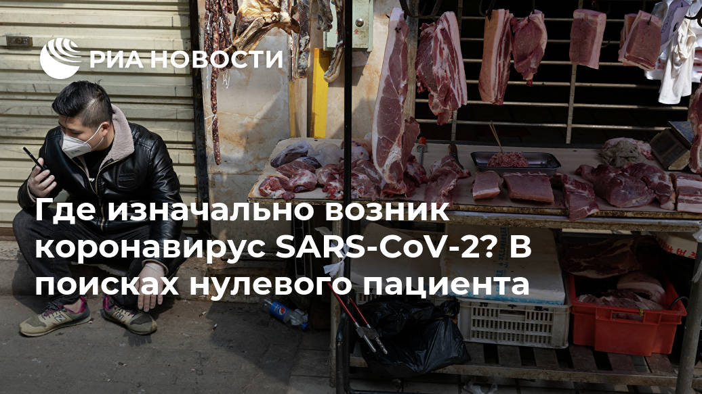
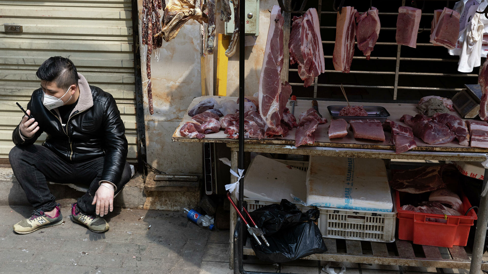
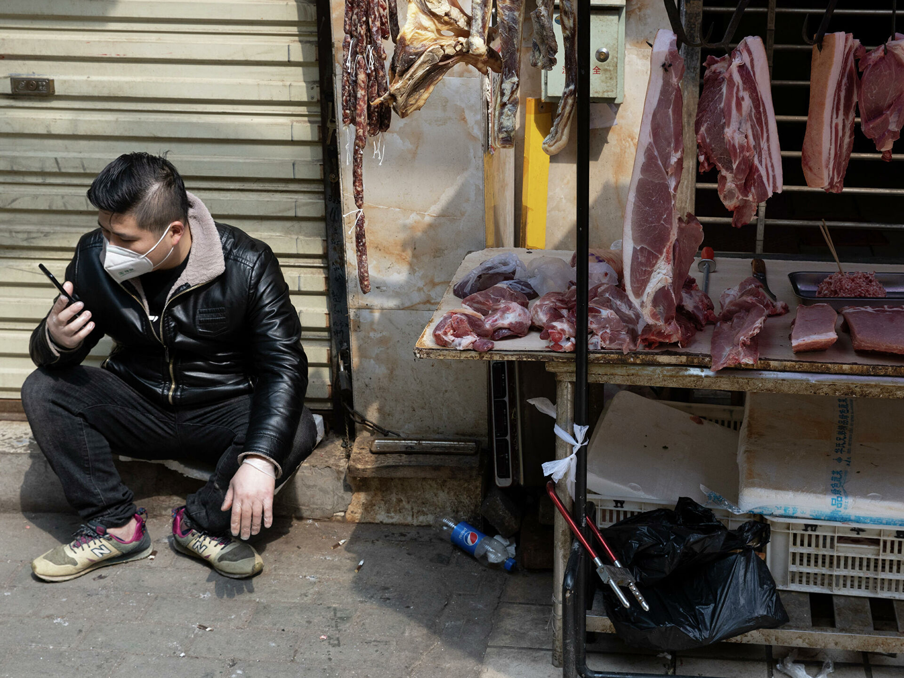
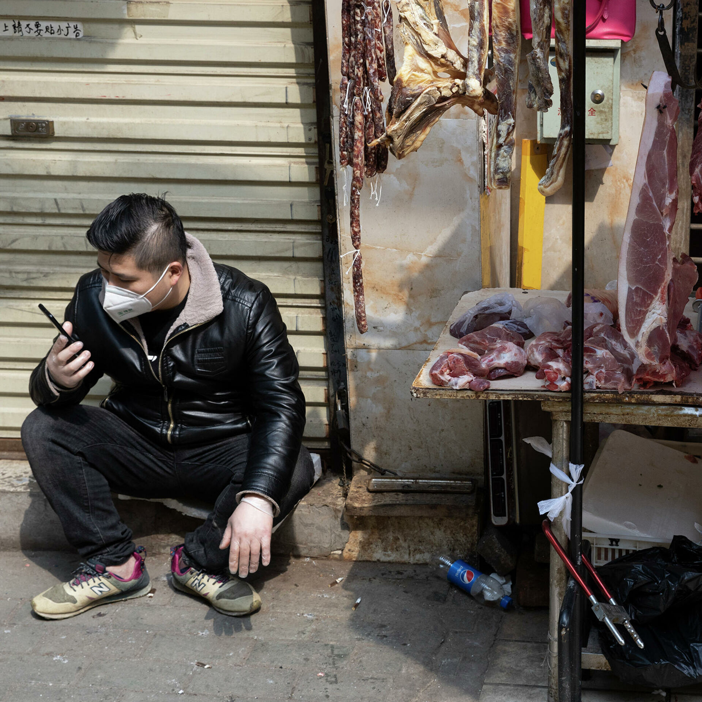
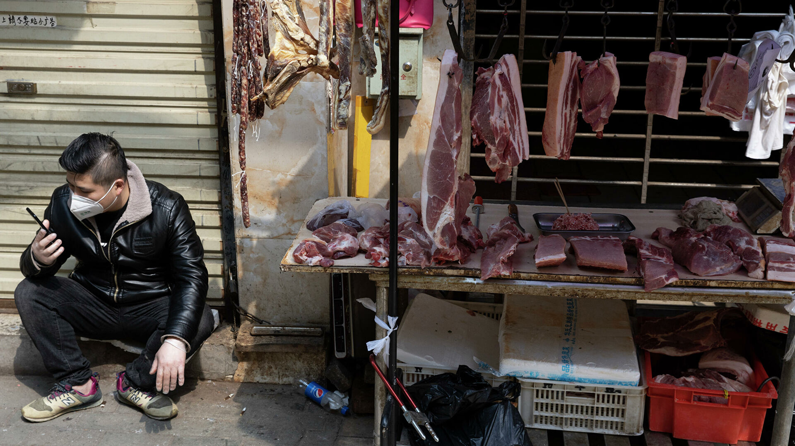
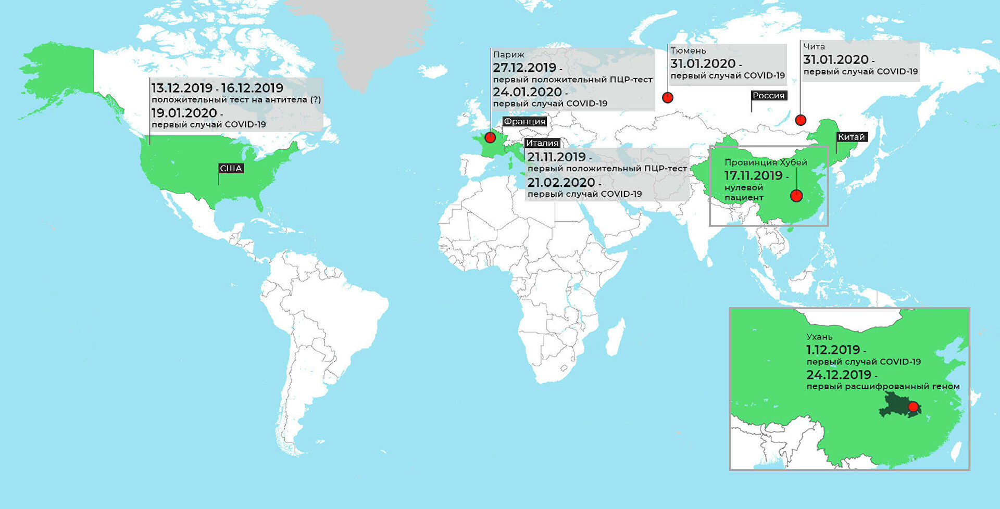
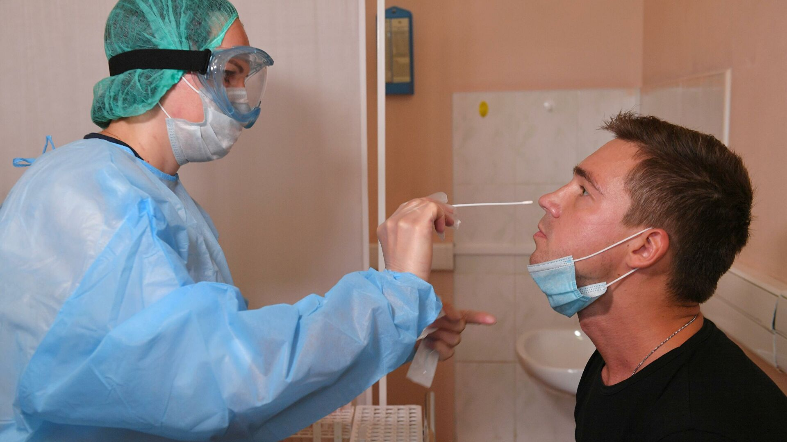
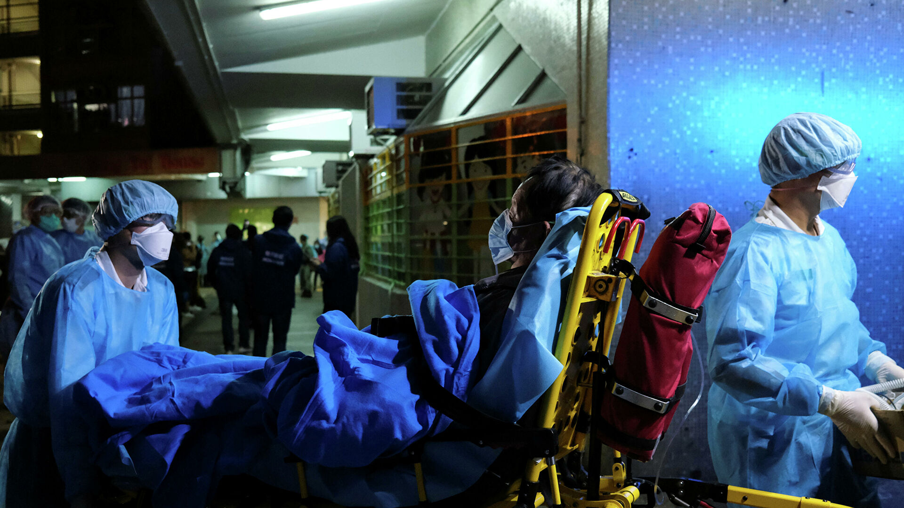

Где изначально возник коронавирус SARS-CoV-2?В поисках нулевого пациента

МОСКВА, 17 дек — РИА Новости, Татьяна Пичугина.В США в образцах крови, взятых у добровольцев в декабре прошлого года, обнаружили антитела к SARS-CoV-2 или другому очень близкому коронавирусу.Значит, болезнь могла прийти в страну раньше, чем считалось.У мужчины, попавшего в реанимацию в конце декабря во Франции, ПЦР-тест выявил коронавирус задним числом.Аналогичная ситуация в Италии.Вместе с тем моделирование указывает на провинцию Хубэй, где 17 ноября 2019-го появился нулевой носитель вируса.Но от кого он заразился — непонятно.
С 13 декабря 2019-го по 17 января 2020-го жители девяти штатов США добровольно сдавали кровь на стационарных и передвижных пунктах Красного креста.Медики планировали узнать о распространении инфекций, переносимых москитами, — вируса Зика, лихорадки Западного Нила, малярии.Доноры прошли базовый медицинский осмотр, тестирование на опасные заболевания, такие как ВИЧ, заполнили анкеты о самочувствии и поездках за границу.После исследования пробирки хранили в банке крови Красного Креста.
Весной этого года больше семи тысяч образцов передали в Центр по контролю и предотвращению болезней в Атланте, где
протестировали
на антитела к коронавирусу SARS-CoV-2.
В крови 106 человек обнаружили реактивные антитела к S-белку коронавируса SARS-CoV-2.Получается, патоген циркулировал в США за месяц до первого официального случая COVID-19, зарегистрированного 19 января 2020-го.Либо что у части населения уже была защита — из-за инфицирования другими вирусами, имеющими S-белок.Ученые называют это кросс-реактивным иммунитетом.
Из 106 позитивных образцов 84 содержали нейтрализующие антитела, убивающие коронавирус.Причем в одном случае защита была очень сильной, а в другом еще и специфичной именно к SARS-CoV-2.Авторы работы отмечают: такой тест лишь косвенно подтверждает наличие вируса, но как минимум в двух образцах они практически уверены.Где заразились эти люди, предстоит узнать.
Первые случаи COVID-19 в Европе зафиксированы 24 января 2020-го у трех человек, вернувшихся из Уханя и позже лежавших в больницах Парижа и Бордо.Однако вирус мог появиться во Франции и раньше,
полагают
исследователи из госпиталя Сен-Сен-Дени.Они повторно провели анализ биоматериала пациентов, попавших в реанимацию со 2 декабря 2019-го по 16 января 2020-го с симптомами гриппа и вирусным поражением легких.Их мазки, взятые для ПЦР на грипп, оказались отрицательными и хранились в холодильнике.
Новый ПЦР-тест 14 образцов выявил один положительный на РНК коронавируса.Его брали у 42-летнего алжирца, давно живущего во Франции.Мужчина поступил в реанимацию 27 декабря 2019-го с кровохарканьем, кашлем и высокой температурой, которая держалась уже четыре дня.У одного из его детей позже обнаружили сходные симптомы.
Последний раз больной путешествовал за границу в августе 2019-го, поэтому не мог заразиться в поездке.С Китаем семья никак не связана.Авторы работы сделали вывод: коронавирусная инфекция циркулировала во Франции уже в декабре.Ученые подчеркивают, что поиски нулевого пациента необходимо продолжить — это поможет понять, когда началась эпидемия и как распространялась.
В поисках нулевого пациента с COVID-19 ученые задним числом анализируют сохраненные образцы биоматериала доноров крови и пациентов с похожими симптомами.Накапливаются данные о том, что вирус мог минимум месяц циркулировать в человеческой популяции незамеченным до официального начала вспышки в Ухане.
Мазки брали у 39 пациентов в период с сентября 2019-го по февраль 2020-го, затем хранили при минус 80 градусах.ПЦР-тест одного из них показал присутствие РНК коронавируса.Последовательность генома совпала с Wuhan-HU-1, расшифрованным 13 января, и другими распространившимися по миру позже.
Биоматериал принадлежал четырехлетнему мальчику из пригорода Милана, никуда не выезжавшему.Он заболел 21 ноября и через неделю попал в больницу.Спустя три месяца в Италии зафиксировали первый случай COVID-19.Однако инфекция пришла гораздо раньше, считают авторы статьи.Это отчасти объясняет страшный удар эпидемии на севере страны в первую волну.
Вычислить самый первый, нулевой, геном коронавируса попытались ученые из Университета Темпл в США.Они
проанализировали
почти тридцать тысяч последовательностей SARS‐CoV‐2 из 97 стран, помещенных в базу данных GISAID, начиная с 24 декабря 2019 года (первый загруженный геном) по июль 2020-го и собрали первопредка всех последующих вирусов.Назвали его proCoV2 (progenitor SARS‐CoV‐2).
Сведение главных мутантов к одному знаменателю показывает, что proCoV2 возник и эволюционировал в Китае в декабре 2020-го.От него произошли два варианта — μ и α — еще до первого официального случая COVID‐19.Вариант proCoV2-μ дал начало большой линии вирусов, вымершей спустя несколько недель.
Что касается мутанта D614G, который очень быстро распространился в мире и сейчас представлен наиболее широко, то он тоже, скорее всего, возник в Китае, но нельзя исключать и Средний Восток с Европой, поскольку там его обнаружили среди первых образцов.
Вопрос, где же нулевой пациент.Ученые из Университетов Калифорнии в Сан-Диего и Аризоны вместе с коллегами
вычислили
: он должен был находиться в провинции Хубэй в Китае за месяц до первого официального случая.Они смоделировали эволюцию вируса с помощью молекулярных часов, основываясь на данных GISAID, и обнаружили — если отсчитывать от 24 декабря 2019-го, когда взяли первый образец SARS‐CoV‐2 в Ухане, то 17 ноября 2019-го в Хубэе было уже четыре инфицированных, а 1 декабря — девять.
Согласно изначальной гипотезе, заражение произошло на рынке морепродуктов в Ухане.Однако не все первые пациенты имели к нему отношение и с другими заболевшими не общались.Это наводит на мысль, что вирус какое-то время ходил среди населения нераспознанным.Затем произошла резкая вспышка.Почему, вопрос опять же открытый.Авторы работы отмечают роль суперраспространителей — людей, которые заражают десятки окружающих за короткий срок.И сомневаются, что в ноябре прошлого года вирус циркулировал за пределами Китая.
Все это не объясняет, как вирус попал к людям, в чьем организме он возник и где его природный резервуар.Согласно модели, геном proCoV2 содержит все свойства возбудителя COVID-19 — то есть, нулевой геном так же опасен, как и его эволюционные линии.Ближайшие похожие коронавирусы выделены из летучих мышей в провинции Юньнань в 2013 году.Их геном отличается на четыре процента от SARS‐CoV‐2, а значит, эти особи — лишь промежуточные хозяева.Сходные патогены обнаружили у китайских панголинов и норок в Европе и США.А вот родоначальник уханьского вируса и его эволюция по-прежнему неизвестны.
Posted On: 2020-12-17T05:00:00







Content Date: 2020-12-17
Download Date: 2021-03-17
Document ID: L0C0498ZQ